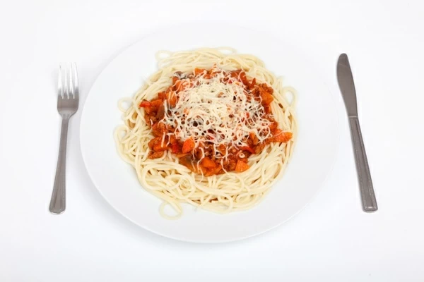

Spaghetti
 Recipe
Today you will be making a spaghetti. Below will be proper steps in creating this dish.
Spaghetti like never before invented. Enjoy!
Ingredients
- 1 pound spaghetti
- 2 pounds lean ground beef
- 1 onion, minced
- 1 (6 ounce) can tomato paste
- 2 (10.75 ounce) cans condensed tomato soup
- 2½ cups water
Directions
Step 1
- Bring a large pot of lightly salted water to a boil. Add pasta and cook for 8 to 10 minutes or until al dente; drain.
Step 2
- In a large skillet over medium heat, cook ground beef with onion until meat is brown. Drain. Return meat mixture to pan with tomato paste, tomato soup and water.
Cook, stirring, until heated through and thickened, 5 to 15 minutes. Serve over cooked pasta.
Bong Apple Tea